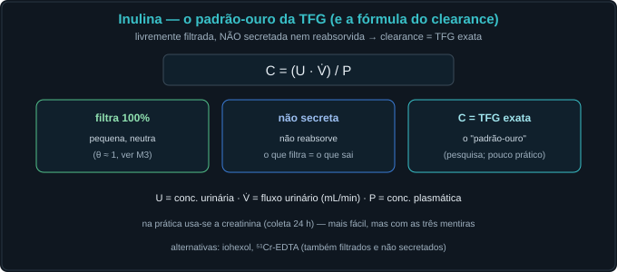
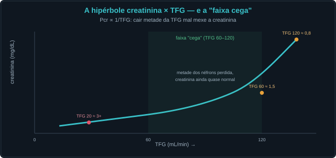
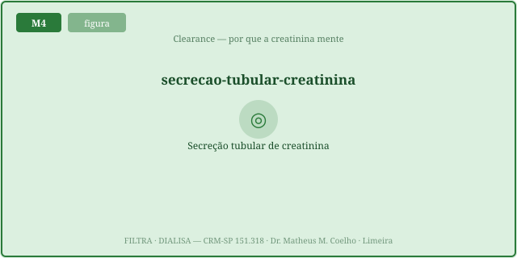
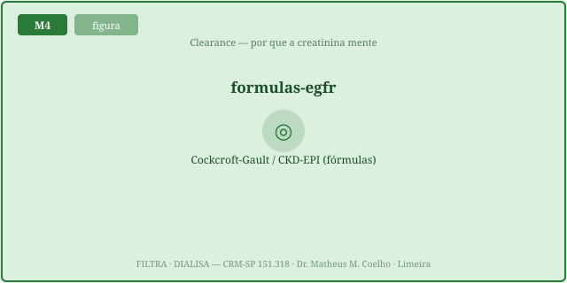
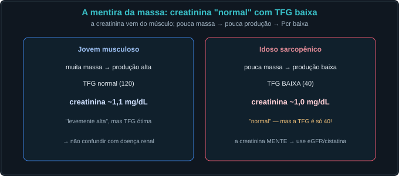
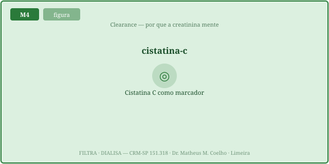
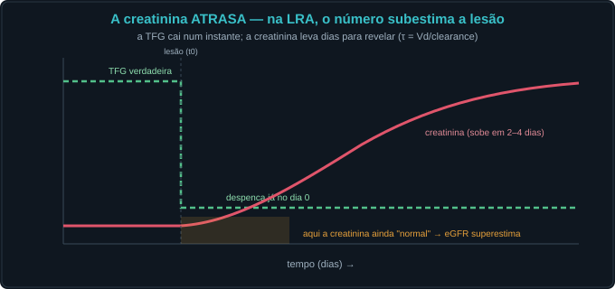

Conceito — a creatinina como sombra da TFG
1. O clearance: medir a depuração
O clearance (depuração) de um soluto é o volume de plasma "limpo" dele por minuto:
C_x = (U_x · V̇) / P_x — concentração urinária × fluxo urinário, dividido pela concentração
plasmática. Se o soluto é filtrado livremente e não é reabsorvido nem secretado (a inulina),
seu clearance é exatamente a TFG — o padrão-ouro. A creatinina chega perto, mas com vícios.

C = U·V̇/P. Para um
marcador ideal (filtrado e nada mais), esse número é a TFG. A urina conta a história que o plasma
esconde.
2. A hipérbole e a "faixa cega"
No estado estável, a creatinina gerada pelo músculo iguala a excretada:
geração = P_Cr · TFG. Logo P_Cr ∝ 1/TFG — uma hipérbole. A consequência é
cruel: cair de TFG 120→60 (perder metade da função!) mal tira a Cr da faixa normal; já 30→15
dobra a Cr de forma dramática. A primeira metade da perda é invisível — a faixa cega da creatinina.

3. A secreção tubular — o clearance superestima a TFG
A creatinina é filtrada no glomérulo, mas também secretada pelo túbulo (~10–20%). O clearance de creatinina, então, superestima a TFG verdadeira — e o erro piora quanto mais baixa a TFG. Fármacos que bloqueiam essa secreção (cimetidina, trimetoprima) sobem a creatinina sérica sem mudar a TFG — é mecanismo, não lesão.


4. A massa muscular — a creatinina mente
A creatinina nasce do músculo: geração ∝ massa muscular. Uma idosa caquética gera pouca creatinina → sua Cr fica "normal" mesmo com TFG péssima (a creatinina mente para baixo). Um jovem musculoso tem Cr alta com TFG normal. O mesmo número, dois significados opostos — decompor antes de interpretar.


5. O não-equilíbrio — a Cr atrasa na LRA
A hipérbole vale no estado estável. Quando a TFG despenca de forma aguda (LRA), a creatinina não pula para o novo platô: ela sobe devagar, ~0,3–1,5 mg/dL por dia, até alcançar o novo equilíbrio. No dia 1, a Cr ainda parece quase normal embora a TFG real já esteja no chão. A Cr atrasa — e quem trata o número, não o mecanismo, perde o diagnóstico. As Fig. 1–8 reaparecem no Caso, na Trilha e na Avaliação.

Caso — cinco atos, decida antes de revelar
Três pacientes, três creatininas. (A) Idosa, 80 anos, 48 kg, caquética: Cr 1,0 mg/dL — "normal". (B) Jovem, 28 anos, fisiculturista: Cr 1,4 mg/dL — "alta". (C) Homem, 60 anos, sepse há 18 h, oligúrico: Cr 1,3 mg/dL ontem, 1,6 hoje.
GFR 35, muscle 0.4, idosa → P_Cr ainda < limiar → faixa cega. Peça
eGFR (que corrige por idade/sexo) ou cistatina C.GFR 110, muscle 1.6 → P_Cr elevada, mas eGFR-cistatina
normal. A creatinina mente para cima no excesso de massa. O número isolado não é a função.GFR0 120 → GFR 20, day 1 → lag grande, regime
nao_equilibrio. A oligúria e a velocidade da subida valem mais que o valor absoluto.ClCr = TFG·(1+secEff). E se o
paciente toma cimetidina/trimetoprima, a secreção é bloqueada → a Cr sérica sobe sem que a TFG mude.
Mecanismo, não lesão.Lição: a creatinina é a sombra; a TFG é a luz. Hipérbole, secreção, músculo e tempo deformam a sombra. Decompor antes de interpretar.
Trilha socrática — dez passos que constroem o conceito
1. O que é o clearance de um soluto?
Pista: volume limpo por minuto.
C_x = (U_x · V̇)/P_x — o volume de plasma totalmente depurado do soluto por minuto. Mede a capacidade de
depuração do rim.
2. Por que o clearance de inulina é igual à TFG?
Pista: filtrada e nada mais.
A inulina é filtrada livremente e não é reabsorvida nem secretada → tudo que é filtrado sai na urina.
Logo o clearance dela é a TFG (padrão-ouro).
3. No estado estável, por que P_Cr ∝ 1/TFG?
Pista: geração = excreção.
Em equilíbrio, a creatinina gerada pelo músculo iguala a excretada: geração = P_Cr · TFG. Isolando,
P_Cr = geração/TFG → uma hipérbole. A Cr é inversamente proporcional à TFG.
4. O que é a "faixa cega" da creatinina?
Pista: a primeira metade da perda.
Por causa da hipérbole, cair de TFG 120→60 (perder 50% da função) mal move a Cr da faixa normal. A perda
precoce é invisível na Cr; só abaixo de ~60 mL/min ela dispara. A Cr é um mau detector precoce.
5. Por que o clearance de creatinina SUPERESTIMA a TFG?
Pista: o túbulo secreta.
A creatinina é filtrada E secretada pelo túbulo (~10–20%). Sai mais Cr na urina do que a filtração
sozinha explicaria → ClCr = TFG·(1+secreção) > TFG. O erro piora quanto menor a TFG.
6. Como a cimetidina/trimetoprima sobem a Cr sem lesão renal?
Pista: bloqueiam a secreção.
Elas inibem o transportador que secreta creatinina no túbulo → menos Cr excretada → a Cr sérica sobe.
A TFG não mudou: é um artefato de medida, não uma lesão.
7. Por que a Cr "normal" de uma idosa caquética engana?
Pista: pouca massa muscular.
A creatinina nasce do músculo. Pouca massa → pouca geração → Cr "normal" mesmo com TFG péssima. A creatinina
mente para baixo. Use eGFR corrigido (idade/sexo) ou cistatina C.
8. Por que a cistatina C é melhor na baixa massa muscular?
Pista: todas as células nucleadas.
A cistatina é produzida por todas as células nucleadas a taxa constante → independe da massa
muscular. Sua concentração reflete a TFG sem o viés que distorce a creatinina.
9. Na LRA aguda, por que a Cr "atrasa"?
Pista: estado estável demora.
Quando a TFG despenca, a Cr não pula ao novo platô — ela sobe devagar (dias) até reequilibrar. No
dia 1, a Cr ainda parece quase normal embora a TFG real já esteja no chão. O tempo importa.
10. Por que ajustar dose de fármaco pela Cr crua é perigoso?
Pista: a Cr ≠ a TFG.
Na idosa caquética, a Cr "normal" esconde uma TFG baixa → dose plena de fármaco renal acumula e intoxica.
Ajuste pela TFG estimada (eGFR) ou medida, não pela creatinina isolada.
Instrumento — a hipérbole P_Cr × TFG (com a faixa cega)
A curva ciano é a creatinina de estado estável em cada TFG. A faixa sombreada (TFG 60–120) é a faixa cega: a Cr mal se move ali. O ponto branco é a sua TFG verdadeira atual. Mexa na massa muscular e veja a hipérbole inteira subir (geração↑ sobe a Cr em toda TFG) — a mesma TFG, outra creatinina.
O atraso da Cr no não-equilíbrio (computado)
Laboratório — mova a fisiologia, leia a creatinina por mecanismo
| Variável | Atual | Normal ≈ |
|---|---|---|
| P_Cr — creatinina sérica ATUAL (mg/dL) | — | 0.7–1.2 |
| P_Cr de equilíbrio nesta TFG (mg/dL) | — | ~0.9 |
| Atraso da Cr (platô − atual, mg/dL) | — | 0 |
| Clearance de Cr medido (mL/min) | — | ~138 |
| ↳ superestimativa vs TFG real (mL/min) | — | ~18 |
| Cistatina C (mg/L) | — | ~0.85 |
| eGFR pela creatinina (mL/min/1,73m²) | — | ≈ TFG |
| eGFR pela cistatina (mL/min/1,73m²) | — | ≈ TFG |
| Estágio DRC (pela TFG real) | — | G1 |
| Estágio que o eGFR-Cr estimaria | — | G1 |
| Na faixa cega? | — | não |
| Regime | — | normal |